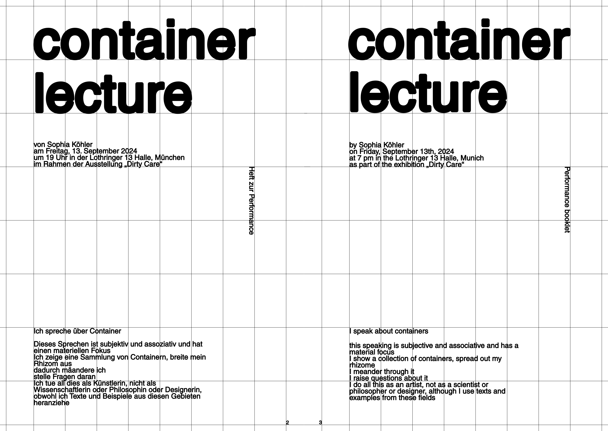
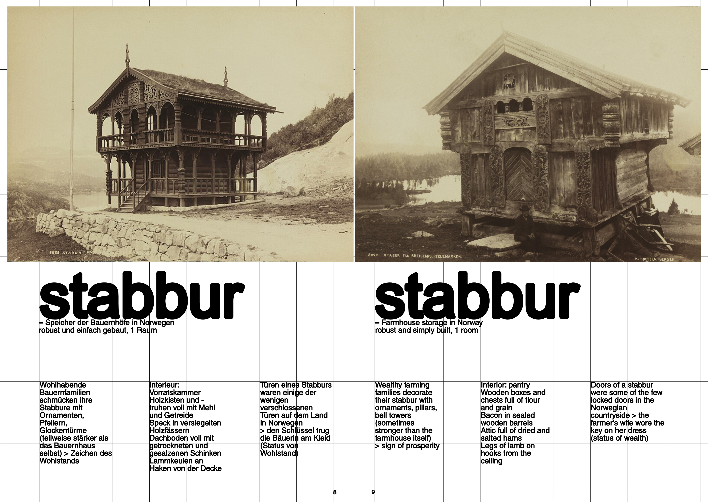
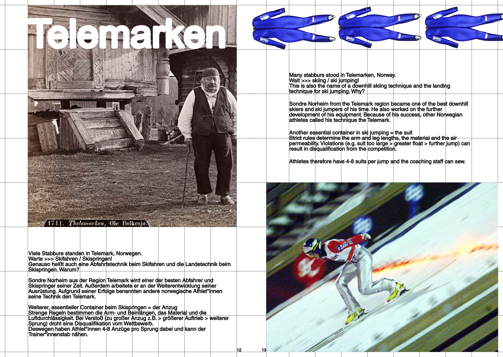
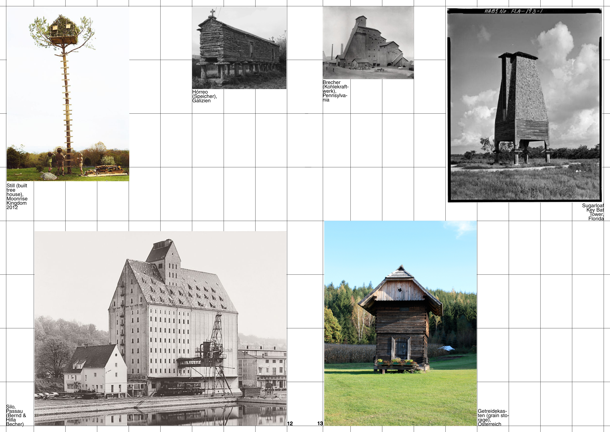
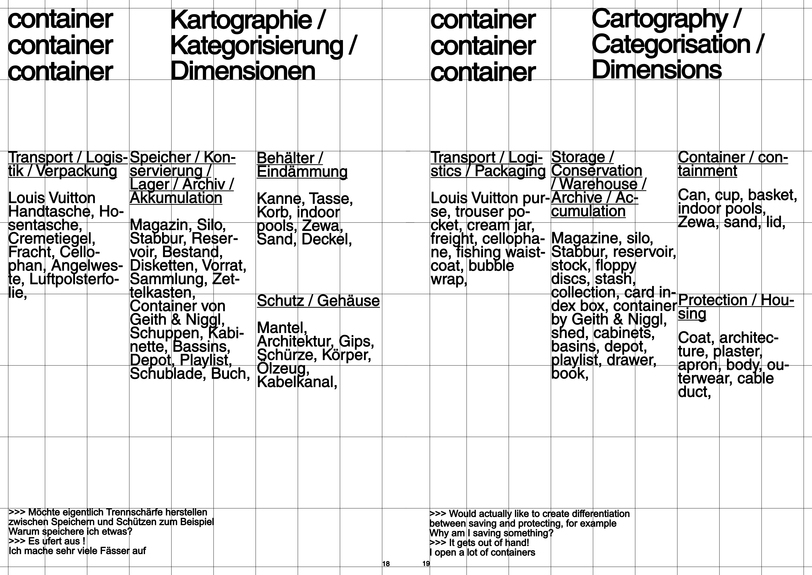
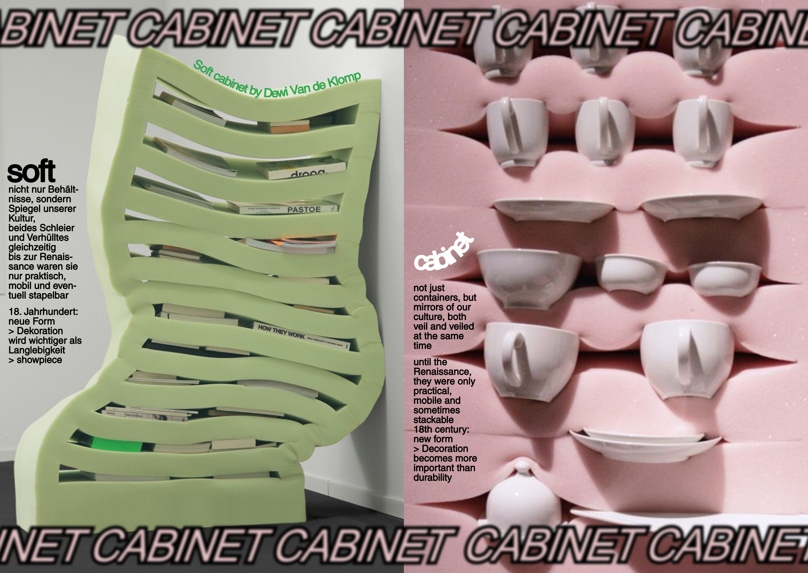
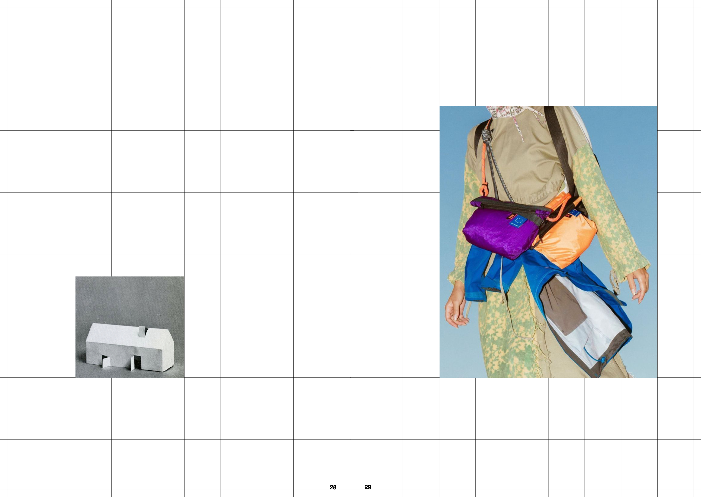
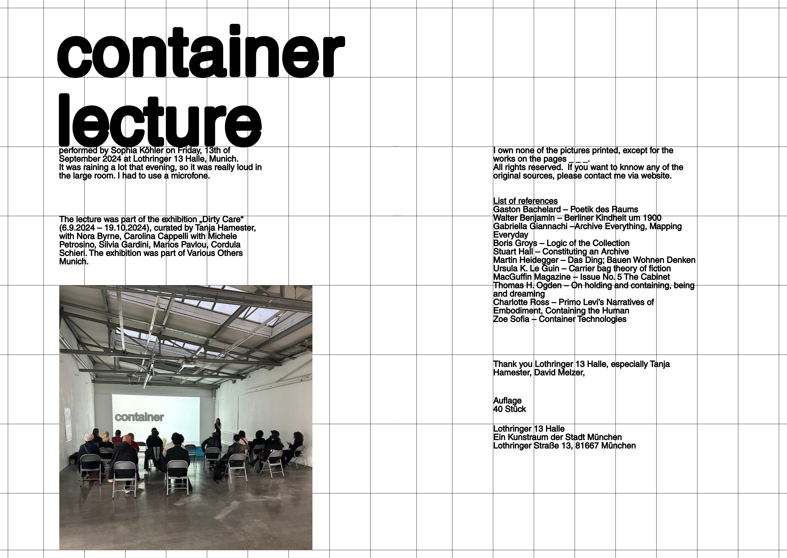

CONTAINER
LECTURE
September 2024
Almost everything is a container. The phenomenon of containing material or substances has a long, often overlooked history. You do it for different reasons: transportation, protection, conservation, collection, archives, etc., so the container must have specific spatial expansions and shapes. The lecture is a broad exploration of this phenomenon. Starting from our body to reservoirs, prada bags, basins, floppy disks, stabburs, magazines, cabinets and milk cans. What are the different states and conditions of containers? Can storage be part of an artistic practice? Is storage an artistic practice itself? How can I hold something?









